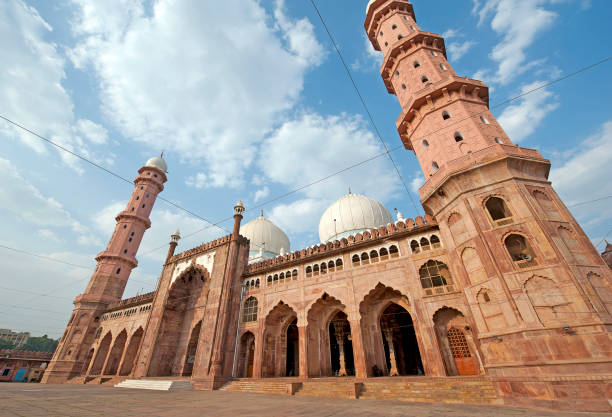

ABOUT

The construction of the Taj-ul-Masajid was started by Nawab Shah Jahan Begum of Bhopal, in the newly-built walled suburb of Shahjahanabad. The exact year when construction was started is unclear; Sharma estimates it to be 1871. After Shah Jahan Begum died in 1901, the mosque continued to be built by her daughter Sultan Jahan Begum, till the end of her lifetime. The structure was planned in the midst of three water bodies, namely: Munshi Hussain Talab; Noor Mahal Talab; and Motia Talab.
The mosque was not completed due to a lack of funds, and construction did not resume until 1971. The entrance was renovated with motifs from 13th century Syrian mosques donated by the Emir of Kuwait in memory of his late wife.